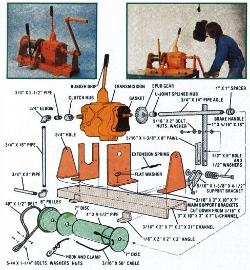
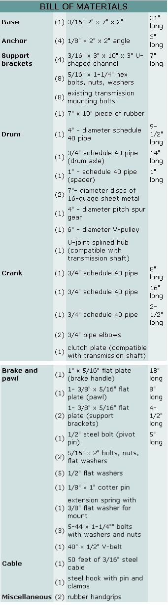

Sooner or later every homeowner needs a good winch. Not necessarily a heavy-duty industrial model ... but a reliable unit that can lift a ton without raising a sweat. Something that won't cost an arm and a leg but that'll handle those occasional engine-hoisting, stump-pulling, and other load-lifting chores which pop up from time to time around every house, apartment, garage, and basement in North America.
Well sir (and ma'am), MOTHER'S inventive researchers have put together just such a winch that almost anyone can use and afford because [1] it's hand operated, [2] it costs less than $35 to build, and [3] it's every bit as good as commercial models with the same load capacity ... but which sell for $100 or more!
Start this project by scrounging up a discarded "manual shift" car or truck transmission (available from your friendly local scrap-iron dealer for as little as $5.00, or at an auto wrecking yard for a bit more). Just about any make or model of manual gearbox will do, but you'll find that the "top loader" type pictured here works best. This is because the gear-changing mechanism is built right into the transmission's cover plate ... hence, there's no shift linkage outside the box to mess with. (Tip: Most cars constructed prior to the Second World War, and many pickups presently on the road especially those equipped with 4-speed drive use"top loader" transmissions of this type.)
You'll also need an assortment of channel, angle, and flat iron to make the base and various supports for your winch. Again, your neighborhood scrap-iron dealer is the man to see . . . or the local steel supply house, if you don't mind paying a little more for the same thing. The remainder of the components you see here are also available as scrap ... including the automotive parts, the pipe, and the pulley and belt (both of which can be salvaged from an old washing machine).
Remove the tail-shaft housing (that "extra" piece which holds the speedometer cable and is bolted to the rear of the gearbox) from your recycled transmission and cut out a scrap of rubber inner tube the same size and shape as the box's rear plate. This piece of rubber will serve as a gasket between the transmission and the cut-down U-channel which supports that end of the gearbox. (When you cut out the gasket, remember to spot and make holes in the rubber for the mounting bolts and the transmission's main shaft ... which, of course, will all pass through the gasket.)
All four of the 3/16" X 3" X 10" X 7" main support brackets are cut from one 28"-long piece of 3/16" X 3" X 10" X 3" U-shaped channel. (If you don't own a gas torch, you should be able to persuade a local welder to do all of this project's metal cutting-there's really not a great deal-for a nominal fee.)
Lay the 30"-long section of 3/16" X 2" X 7" X 2" channel iron (the winch's base) down and place the transmission on it "for position". Then turn two of the main support brackets up "on edge" (with one of the 3" side lips flush against the base) and set them against the gearbox's main shaft, one in front and the other at the rear of the transmission. Cut these brackets off about 1/12" above the top of the shaft, drill a 3/4" hole through each metal plate where it touches the shaft's end, and then trim both brackets down to form the tapered shape you see in the accompanying illustrations. These will be the crank and drum brackets.
Follow the same procedure with the two channel-iron brackets that fit right up against the faces of the gearbox itself. (Only, this time, you'll have to drill holes in the plates to match the mounting pattern on the front and rear of your particular transmission. You'll also have to cut out a slot on the front bracket large enough to allow the gearbox's case to mount flush against the support.) Once the two brackets have been cut to size and drilled, slip your newly made rubber gasket onto the rear of the transmission and bolt the supports firmly to the gearbox with the original hardware that came with the unit.
Now position the front of the transmission about eight inches from one end of the channel-iron base, drill a couple of holes through each of its two support brackets' "feet", and bolt the box in place with four 5/16" X 1-1/4" bolts, nuts, and lock washers. (NOTE: An additional, 3/8" flat washer-with an edge bent up and drilled as shown-is slipped under one of the bolt heads before it's cinched down. The tension spring for a ratchet pawl will hook into the drilled hole later, during the final assembly of your winch's accessory hardware.)
We all know that the longer the handle we put on a winch like this, the more leverage we'll have and the easier it'll be to "wind up" a heavy load. And that's why MOTHER's designers outfitted this winch with a hefty pipe handle that's approximately a foot and a half long. This is longer by several inches than the distance that the unit's main shaft is positioned above the winch's base . . . which very definitely could create clearance problems during the operation of the hoist. In this case, though, that's no problem for two reasons: [1] this winch is designed, under normal conditions, to be mounted close enough to the edge of a truck bed, a bolted-down shop bench, a loading dock, etc. to allow absolutely free clearance of its handle during a full turn, and [2] MOTHER's ingenious inventors have built an automatic lock and a splined handle into the unit so that anytime the crank's rotation is limited-you have only to pull out on the handle, turn it to a "free" position, push the crank back in, make a half-turn, and repeat until the load you're trying to raise is lifted despite the tight clearance around the hoist's handle.
The key element which makes this nifty feature work is a scrounged-up clutch plate which has a hub with splines that fit those on your winch's input shaft. Cut the hub out and weld it to the 2-1/2"-long 3/4" pipe nipple. Then slip the unit through the 3/4" hole (it should be a loose but not a sloppy fit) at the top of one of the triangular support brackets (note that the support is turned so its lip faces the transmission), and thread a 314" pipe elbow onto the nipple's other end. Position the bracket so it's easy to both slip the hub onto and pull it off the transmission's shaft, then drill two 5/16" holes and bolt the support securely to the base.
Finish the crank by threading the 16" length of 3/4" pipe into the open end of the just-mounted elbow, put another 90° elbow on the pipe's other end, and screw the 8" length of 3/4" pipe into that. Then weld all the threaded joints together so they'll never come apart during the winch's use.
The hoist's business end is made by cutting the splined hub from an old universal joint and welding it to a spur gear about 4" in diameter (the gear's hub size isn't critical, as long as it'll fit over the splined shaft that comes out of the transmission). Then weld a 14"-long piece of pipe to the other end of the U-joint's splined hub (it's OK If the pipe extends about half an inch into the hub for extra strength when the two are welded together), slip a 6"-diameter V-pulley over the axle (you may have to cut some meat out of the pulley's hub to do this), and weld the pulley to the splined hub, too.
You're now ready to cut two 7"-diameter discs from some scrap 16-gauge sheet metal. Drill a 3/4" hole in the center of each of these drum end plates, slip the first one over the axle, and weld it securely to the V-Pulley. Then center a 9-1/2"long section of 4" pipe (the drum itself) on the plate, slide the second end plate down the axle until it touches the drum's other end, and securely weld the assembly together. (NOTE: It is important that the section of pipe is "true" on the end plates before it's welded to them so the finished drum won't be "off center" as it rotates. One good way to true up this assembly is by cutting four pieces of wood to the same width and then squeezing them equally spaced around the axle-in between the 3/4" shaft and the 4" drum before it's welded to the end plates.)
Slip a 1"-long piece of 1" pipe over the 3/4" pipe shaft, slide this spacer up against the finished drum assembly, loop the brake belt over the V-pulley, drill two 5116" holes through the "toot" of the last main support bracket, push the bracket up loosely against the 1 " spacer, and bolt the support to the winch's base.
Next, cut a 45° angle onto one end of each of the small (5/16" X 1-3/8" X 4-1/2") brake and pawl support brackets and weld the supports-as shown-to the side of the base directly under the drum assembly's spur gear (with the 5/16" X 1-3/8" X 8" pawl stock positioned between the two brackets so that it squarely contacts the spur gear's teeth).
Then drill a 1/2" hole through the support brackets, the pawl, and one end of the 5/16" X 1" X 18" brake handle. (Two 5/16" holes should also be drilled through the brake handle at this time: Spot the first four inches above the 1/2" hole and the second six inches above the first. This, too, is a good time to drill a 1/4" hole-for the tension spring to hook into -through the pawl arm about four inches down from its top.)
After that, run a 1/2" X 5" bolt through a flat washer, the butt end of the brake handle, four more washers, the first support bracket, the butt end of the pawl, the second support, and another washer. Then drill a 1/8" hole through the bolt's end and secure the whole assembly with a 1/8" X 1 " cotter pin. Hook one end of the tension spring to the 1/4" hole in the pawl arm and the other end to the hole in the bent-up washer bolted to the main support bracket. This, also, is the time to secure a 5/16" X 2" bolt in each of the brake handle's two 5/16" holes (use two nuts-one on each side of the bar-to firmly cinch each bolt in place).
Weld four 1/8" X 2" X 2" X 3" angle-iron brackets to your winch's channel-iron base and drill 3/8" holes through them so you can bolt the hoist down so tightly that it'll never move under a load. Then take the whole unit outside, wash the whole unit down good with gasoline, and give it a couple of coats of a bright industrial paint.
After that it's a simple matter to slip a couple of rubber handgrips over the winch's bare metal handles. And just as easy to slide a V-belt into the pulley's groove, wrap it around the brake handle's lower bolt, and then hook the belt up over the handle's top bolt as shown. (Hold the V-belt in place by drilling two or three 1/8" holes through both sides of the loop and fastening a couple or three 5-44 X 1-1/4" bolts through the doubled rubber.
And finally: The 3/16" steel cable is permanently fastened to the winch's drum by passing it through two 1/4" holes drilled approximately one and a quarter inches apart in the "outside" drum end plate. Loop the cable through the holes as shown so that four inches or so of the braided and twisted wire lies on the drum .. . and then braze it firmly in place. The other end of the cable, of course, is formed into a loop and a hook is attached to it with standard cable clamps.
Bolt your winch down, hook the cable to anything that it'll hold, select a gear (including reverse-the most powerful that you'll use merely by cranking "the other way"), and "wind 'er up"! The ratchet and pawl will prevent the cable from suddenly paying out when you let go of the crank, and the brake can be hand operated (with lighter loads) merely by releasing the pawl.
If anyone has a better idea for a winch that [1] has several gear ratios for [2] under $35, we'd sure like to know about it. 'Cause, as far as we're concerned, there's not much you can do to improve this design . . . short of rigging up a motor drive for it!
|
 |
 |
|